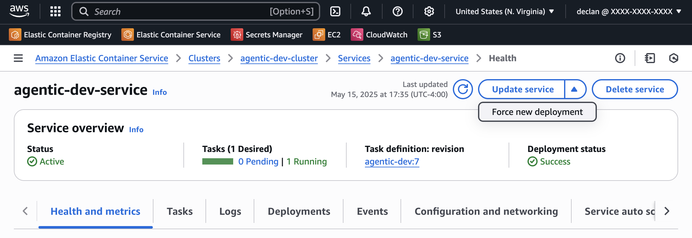

Agentic AWS Deployment Guide
This guide provides step-by-step instructions for deploying your Agentic agents to AWS using Docker and Terraform. You can choose between deploying the API server or the dashboard interface.
Note: If you have already completed the Getting Started guide, you can skip to Step 5.
Prerequisites
Before you begin, make sure you have the following:
- Python 3.12
- Docker installed and running
- AWS CLI installed and configured
- Terraform installed (v1.0.0+)
- AWS Account with appropriate permissions
- API keys for your LLMs (OpenAI, Anthropic, etc.)
Step 1: Set Up Local Environment
Create a new directory for your project and navigate to it:
mkdir -p ~/agentic
cd ~/agentic
uv venv --python 3.12
source .venv/bin/activate
Step 2: Install Agentic Framework
Next, install the Agentic framework with all optional dependencies:
pip install "agentic-framework[all]" --extra-index-url https://download.pytorch.org/whl/cpu
Step 3: Initialize Your Project
Initialize a new Agentic project:
agentic init
This will create the basic project structure with example agents and tools.
Step 4: Build Your Agent
Create or modify an agent in the agents directory. For example, agents/basic_agent.py:
from agentic.common import Agent, AgentRunner
from agentic.tools import WeatherTool
basic_agent = Agent(
name="Weather Agent",
welcome="I can give you weather reports! Just tell me which city.",
instructions="You are a helpful assistant specializing in weather information.",
tools=[WeatherTool()],
model="openai/gpt-4o-mini"
)
if __name__ == "__main__":
AgentRunner(basic_agent).repl_loop()
Test your agent locally:
python agents/basic_agent.py
Step 5: Configure Secrets
You have three options for configuring your secrets:
Option 1: Environment File (.env)
- Copy the example environment file:
cp .env.example .env
- Edit
.envto add your API keys and other secrets:
OPENAI_API_KEY=sk-your-openai-key
ANTHROPIC_API_KEY=sk-ant-your-anthropic-key
# Add other secrets as needed
When you build the docker image, the secrets will be automatically loaded into the container.
Option 2: AWS Secrets Manager (via Terraform)
Secrets will be automatically configured in AWS Secrets Manager when you deploy using Terraform. You'll need to add your API keys to the deployment/terraform/terraform.tfvars file in step 6.
This approach is recommended for production deployments as it provides better security and centralized management.
Step 6: Configure Terraform
- Copy the example Terraform variables file:
cp deployment/terraform/example.terraform.tfvars deployment/terraform/terraform.tfvars
- Edit
deployment/terraform/terraform.tfvarsto configure your deployment:
# Project and Environment
project = "agentic"
environment = "dev"
# AWS Region
aws_region = "us-east-1"
# Network Settings
vpc_cidr = "10.0.0.0/16"
availability_zones = ["us-east-1a", "us-east-1b"]
private_subnet_cidrs = ["10.0.1.0/24", "10.0.2.0/24"]
public_subnet_cidrs = ["10.0.101.0/24", "10.0.102.0/24"]
# Deployment Mode - options: "api" or "dashboard"
deployment_mode = "api"
# Port Settings
agent_port = 8086
dashboard_port = 3000
# ECS Settings
task_cpu = "1024" # 1 vCPU
task_memory = "2048" # 2 GB
service_desired_count = 1
# Agent Settings
agent_path = "agents/basic_agent.py" # Path to your agent file
user_agents = false # Set to true if you want to enable user-specific agents
use_ray = false # Set to true if you want to use Ray for agent execution
# Secrets Settings
secrets_values = {
OPENAI_API_KEY = "your-openai-api-key"
ANTHROPIC_API_KEY = "your-anthropic-api-key"
}
# Secrets environment variables mapping
secrets_env_mapping = {
OPENAI_API_KEY = "OPENAI_API_KEY"
ANTHROPIC_API_KEY = "ANTHROPIC_API_KEY"
# Add other secrets as needed
}
# Common tags for resources
common_tags = {
Project = "agentic"
Environment = "dev"
Terraform = "true"
}
The deployment_mode variable determines whether you deploy the API server or the dashboard interface.
- Update the
outputs.tffile to include cluster and service information:
# Outputs
output "ecr_repository_url" {
description = "The ECR repository URL where you should push your Docker image"
value = aws_ecr_repository.app.repository_url
}
output "agent_endpoint" {
description = "The endpoint where the agent API or dashboard can be accessed"
value = aws_lb.app_alb.dns_name
}
output "ecs_cluster_name" {
description = "The name of the ECS cluster where the service is running"
value = aws_ecs_cluster.app_cluster.name
}
output "ecs_service_name" {
description = "The name of the ECS service"
value = aws_ecs_service.app.name
}
Step 7: Review Docker Configuration
Your deployment directory already contains the necessary Docker files:
- Dockerfile.api: For deploying the API server version of your agent
- Dockerfile.dashboard: For deploying the dashboard interface
- docker-entrypoint.sh: Script that handles environment variables and starts the appropriate service
The docker-entrypoint.sh script manages:
- Loading environment variables from
.envfile - Setting up the agent path
- Retrieving secrets from AWS Secrets Manager if configured
- Starting either the API server or dashboard based on the
DEPLOYMENT_MODEenvironment variable
Make sure the entrypoint script is executable:
chmod +x deployment/docker-entrypoint.sh
Step 8: Build the Terraform Configuration
Navigate to the terraform directory and initialize Terraform:
cd deployment/terraform
terraform init
Review the infrastructure plan:
terraform plan
Apply the configuration to create the AWS resources:
terraform apply
You'll need to confirm the changes by typing yes when prompted.
Step 9: Build and Deploy the Docker Image
Return to the project root directory and log in to your ECR repository:
cd ../.. # Return to the project root from the terraform directory
export AWS_REGION=$(aws configure get region)
export ECR_REPO_URL=$(cd deployment/terraform && terraform output -raw ecr_repository_url)
aws ecr get-login-password --region ${AWS_REGION} | docker login --username AWS --password-stdin ${ECR_REPO_URL}
Build and push the appropriate Docker image based on your deployment mode:
# For API Server Deployment (if deployment_mode = "api" in terraform.tfvars)
docker build --platform linux/amd64 --tag ${ECR_REPO_URL}:latest --file deployment/Dockerfile.api .
docker push ${ECR_REPO_URL}:latest
# OR
# For Dashboard Deployment (if deployment_mode = "dashboard" in terraform.tfvars)
docker build --platform linux/amd64 --tag ${ECR_REPO_URL}:latest --file deployment/Dockerfile.dashboard .
docker push ${ECR_REPO_URL}:latest
Make sure the Docker image you build matches the deployment_mode you specified in your Terraform configuration.
Step 10: Force a New ECS Deployment
After pushing your Docker image to ECR, you need to force a new deployment to the ECS service to ensure it uses the latest image. You can do this using either the AWS CLI or the AWS Console.
Option 1: Using AWS CLI (Recommended)
You can force a new deployment using the AWS CLI with the following commands:
# Get the ECS cluster and service names from Terraform output
export ECS_CLUSTER=$(cd deployment/terraform && terraform output -raw ecs_cluster_name)
export ECS_SERVICE=$(cd deployment/terraform && terraform output -raw ecs_service_name)
# Force a new deployment
aws ecs update-service --cluster $ECS_CLUSTER --service $ECS_SERVICE --force-new-deployment
# Monitor the deployment status
aws ecs describe-services --cluster $ECS_CLUSTER --services $ECS_SERVICE --query "services[0].deployments"
This will trigger a new deployment of your service with the latest container image, without needing to make changes to your configuration.
Option 2: Using AWS Console

If you prefer using the AWS Console:
- Go to the AWS Console
- Navigate to ECS > Clusters
- Select your cluster (typically named
agentic-{environment}-cluster) - Select the service for your agent
- Click on the "Update service" dropdown
- Click "Force new deployment"
- Click "Confirm" to apply the changes
The force new deployment option will redeploy your containers with the latest image from ECR, even if the task definition hasn't changed.
Step 11: Test Your Deployment
Get the endpoint URL from Terraform output:
export AGENT_ENDPOINT=$(cd deployment/terraform && terraform output -raw agent_endpoint)
Testing API Server Deployment
# Test the discovery endpoint
curl "$AGENT_ENDPOINT/_discovery"
# Test your agent
curl -X POST "$AGENT_ENDPOINT/basic-agent/process" \
-H "Content-Type: application/json" \
-d '{"prompt": "Hello, how can you help me?"}'
Testing Dashboard Deployment
Open a web browser and navigate to the endpoint URL:
http://$AGENT_ENDPOINT
You should see the Agentic dashboard interface where you can interact with your agent.
Step 12: Monitor Your Deployment
You can monitor your agent in the AWS Console:
- ECS: Check the status of your agent service
- CloudWatch: View logs from your agent
- ECR: Manage your Docker images
Troubleshooting
Container Fails to Start
Check CloudWatch Logs for detailed error messages:
- Go to the AWS Console
- Navigate to CloudWatch > Log Groups
- Find the log group for your agent (usually
/ecs/agentic-{environment}) - Check the latest log stream for error messages
Service Not Accessible
Verify the ALB health checks are passing:
- Go to the AWS Console
- Navigate to EC2 > Load Balancers
- Select your load balancer and check the "Target Groups" tab
- Verify that targets are healthy
If targets are unhealthy, check the following:
- Security group rules allow traffic to the container port
- Health check path is correctly configured for API (/_discovery) or Dashboard (/api/_discovery)
- Agent is starting up correctly (check CloudWatch logs)
Authentication Issues
Ensure your API keys are correctly set up:
For AWS Secrets Manager:
- Go to the AWS Console
- Navigate to Secrets Manager > Secrets
- Check the value of your agent secrets
For .env file:
- Verify the .env file has been correctly copied into the Docker image
- Check the container logs for any environment variable related errors
Deployment Not Updating
If you've pushed a new Docker image but the service isn't using it:
- Check that you pushed to the correct ECR repository
- Verify that the image tag is correct (usually
latest) - Make sure you forced a new deployment as described in Step 10
- Check the ECS deployments to see if there are any errors during the update
Cleaning Up
To destroy all AWS resources created by Terraform:
cd deployment/terraform
terraform destroy
You'll need to confirm the deletion by typing yes when prompted.
Customizing Your Deployment
Scaling Your Agent
To scale your agent deployment, adjust the following in terraform.tfvars:
service_desired_count = 2 # Number of instances to run
task_cpu = "2048" # CPU units (1024 = 1 vCPU)
task_memory = "4096" # Memory in MB
Using a Custom Domain
To use a custom domain with your agent:
- Create an HTTPS certificate in AWS Certificate Manager
- Add an HTTPS listener to the load balancer in your Terraform configuration
- Create a DNS record pointing to the load balancer
Switching Between API and Dashboard
To switch between API server and dashboard deployments, update the deployment_mode variable in your terraform.tfvars file:
# For API server
deployment_mode = "api"
# For dashboard
deployment_mode = "dashboard"
Then run terraform apply to update your deployment, rebuild and push the appropriate Docker image, and force a new deployment as described in Step 10.